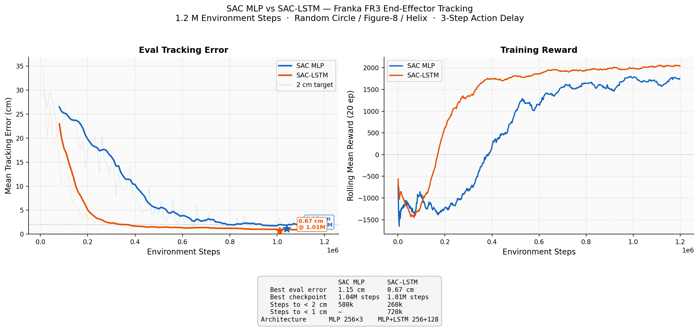
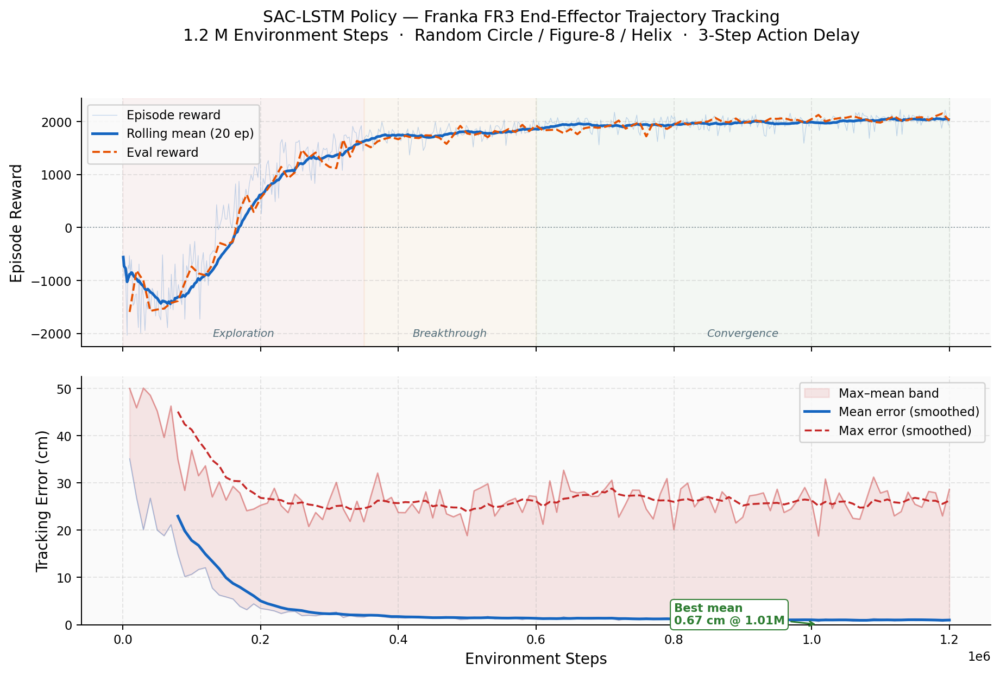
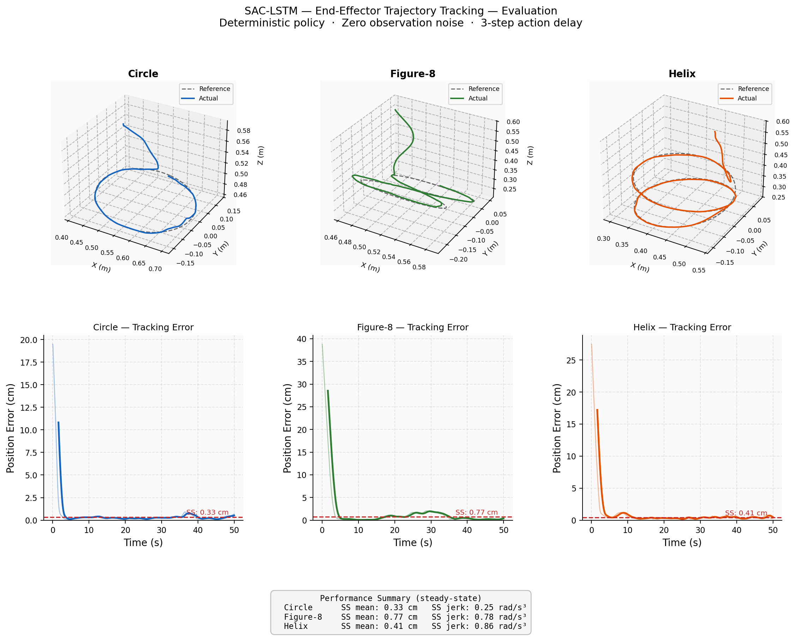
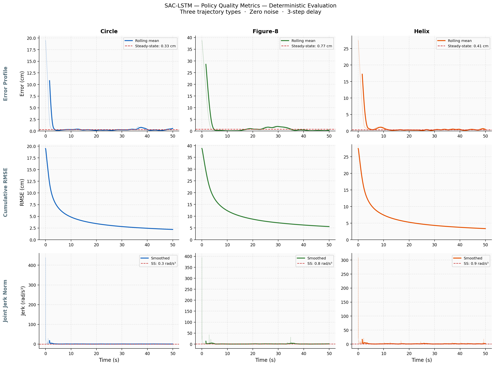
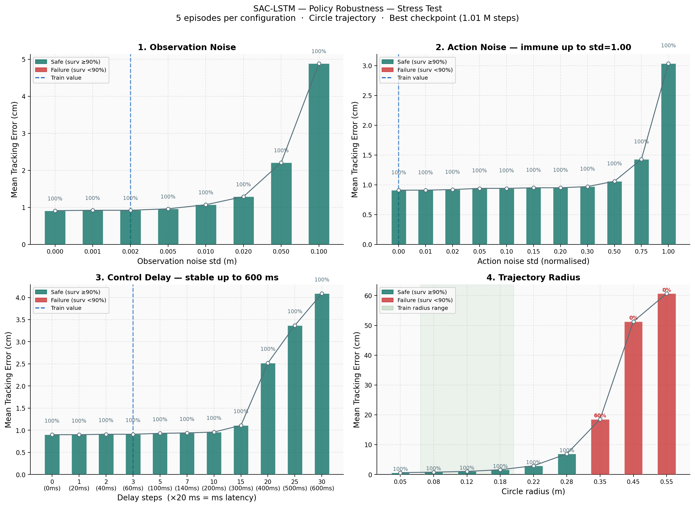
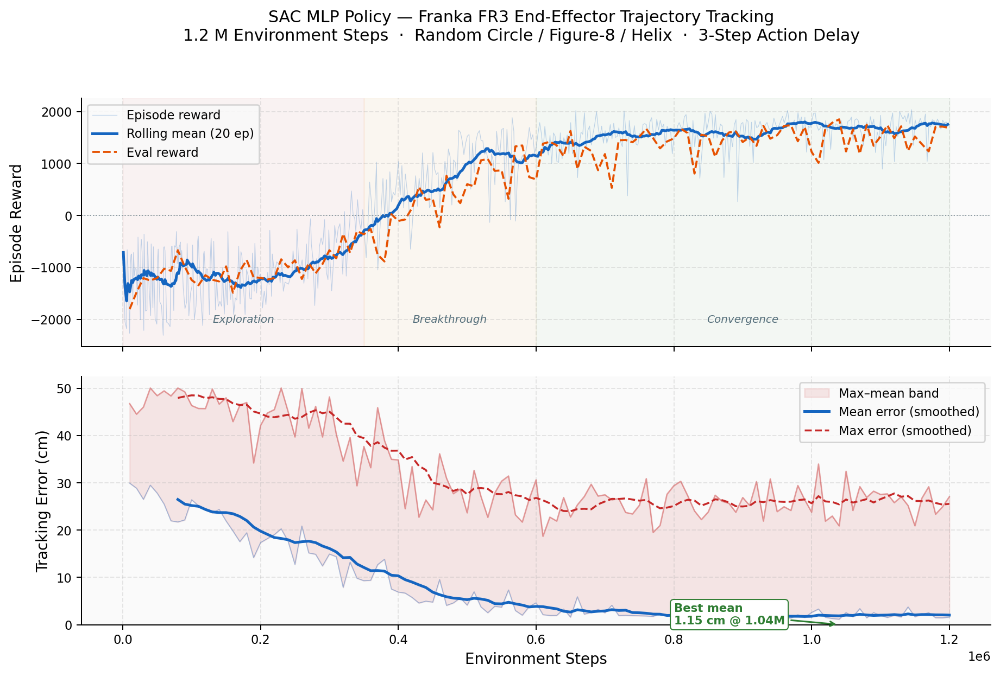
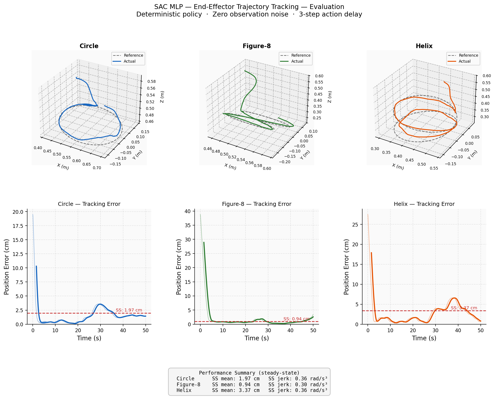
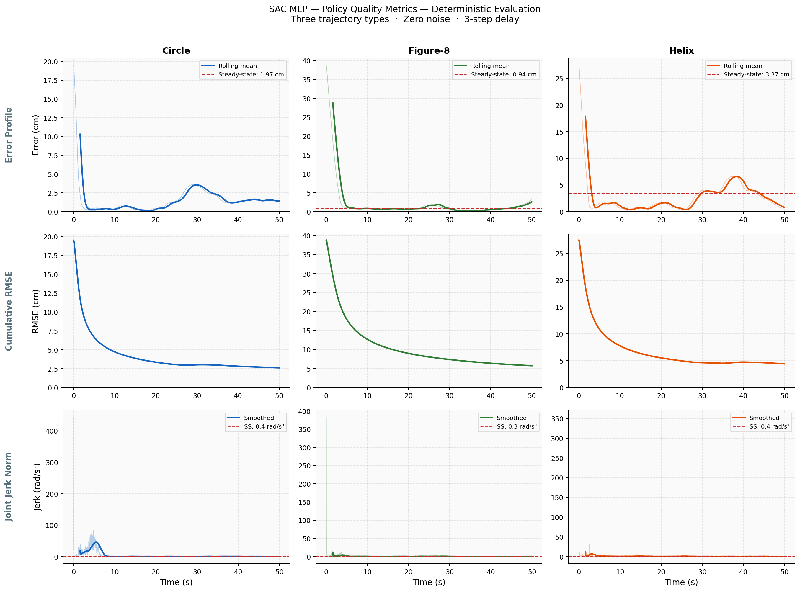
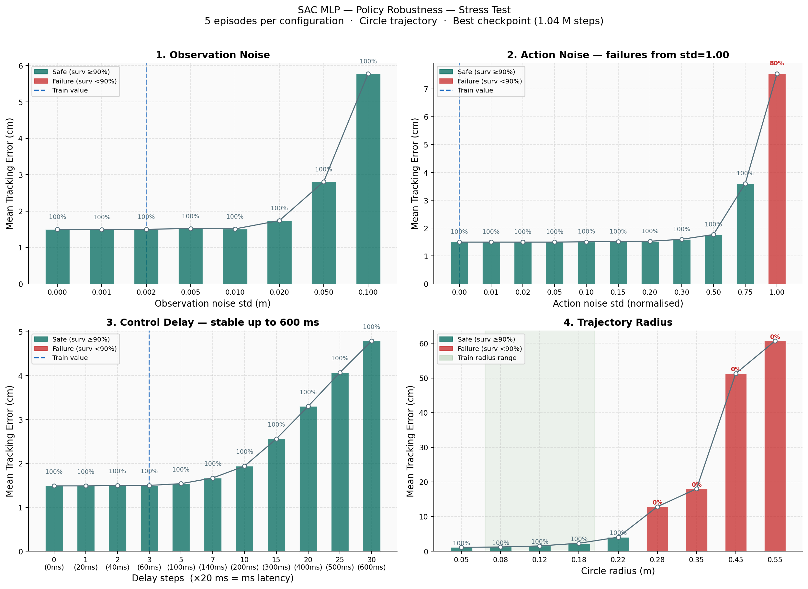
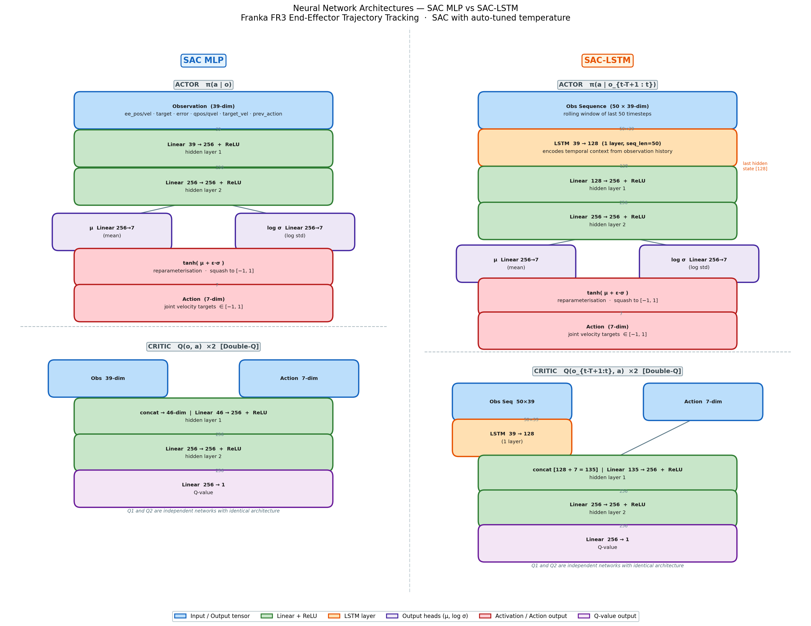

RL End-Effector Trajectory Tracking — Franka FR3
Demo Videos
SAC MLP Policy
SAC-LSTM Policy
Overview
A model-free reinforcement learning system that trains two policies — a Soft Actor-Critic (SAC) MLP and a SAC-LSTM — to control a 7-DOF Franka FR3 robot arm to track 3D end-effector trajectories entirely from joint-space observations. No inverse kinematics, no trajectory planner, no robot model.
Both policies are trained in MuJoCo simulation with randomised trajectory geometry, observation noise, and a 3-step action delay to encourage sim-to-real transfer robustness.
SAC MLP vs SAC-LSTM — Summary

Policy comparison — SAC MLP vs SAC-LSTM training curves
| Metric | SAC MLP | SAC-LSTM |
|---|---|---|
| Best eval error | 1.15 cm @ 1.04M steps | 0.67 cm @ 1.01M steps |
| Steps to < 2 cm | 580k | 260k (2.2× faster) |
| Steps to < 1 cm | — (never reached) | 720k |
| Circle SS mean error | 1.97 cm | 0.33 cm |
| Figure-8 SS mean error | 0.94 cm | 0.77 cm |
| Helix SS mean error | 3.37 cm | 0.41 cm |
| Architecture | MLP 256×3 | MLP 256×3 + LSTM 128-cell |
The SAC-LSTM policy uses a 128-cell LSTM layer on top of the MLP actor-critic to exploit temporal context across the last 50 observation timesteps. This temporal memory enables 2.2× faster convergence and a 42% improvement in steady-state tracking accuracy over the MLP baseline.
SAC-LSTM Results

Training progress — reaches sub-2 cm at 260k steps, best 0.67 cm at 1.01M steps

3D trajectory tracking — Circle, Figure-8, Helix

Policy quality — error profile, cumulative RMSE, joint jerk

Stress test — robustness to obs noise, action noise, delay, trajectory radius
SAC MLP Results

Training progress — best eval 1.15 cm at 1.04M steps

3D trajectory tracking — Circle, Figure-8, Helix

Policy quality — error profile, cumulative RMSE, joint jerk

Stress test — stable up to 300ms delay and 25× training noise
Neural Network Architecture

SAC MLP and SAC-LSTM actor-critic architecture
SAC MLP — single-step feed-forward: obs (39-dim) → Linear 256 → Linear 256 → μ/log σ → tanh → action (7-dim)
SAC-LSTM — sequence-conditioned: obs window (50×39) → LSTM (39→128) → Linear 256 → Linear 256 → μ/log σ → tanh → action (7-dim). The LSTM allows the policy to infer velocity, acceleration, and trajectory curvature implicitly without explicit features.
Robustness Highlights (SAC-LSTM)
| Perturbation | Result |
|---|---|
| Observation noise | 100% survival at all noise levels including 0.1 std (50× training noise) |
| Action noise | Essentially immune — no degradation up to 0.3 std (30% of action range) |
| Control delay | Stable across all delays up to 300 ms; no survival failures |
| Trajectory radius | Safe up to 0.28 m (56% beyond training max); cliff at 0.35 m |